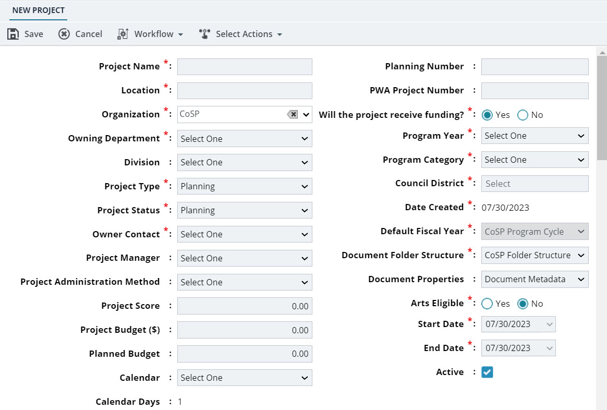

Creating a Planned Project
- The role of the logged-in user should be one of the following:
- Administrative Support
- Director
- Fund Manager
- Manager
- Program Manager
- Support Services
-
In the module menu, click Planning.
The PLANNING DASHBOARD page is displayed.
-
In the navigation pane, click Planned Projects.
The PLANNED PROJECTS list page is displayed.
-
Click New.
Figure 1. New Project Page TheNEW PROJECT page displays the following non-editable fields:Field Description Date Created The current date from the system calendar. Calendar Days / Working Days Based on the selected calendar for the project, theWorking Daysfield displays the number of days calculated from the start date of the project to the completion date of the project. Note:The number of working days is also based on the latest version of the project calendar. For information on creating versions of the project calendar, referto Managing the Project Calendar.If no calendar is selected for the project, theCalendar Daysfield displays the number of days calculated from the start date of the project to the completion date of the project.
Project Score Once the project is scored, the calculated project score. For information on project scoring, refer toScoring a Planned Project. -
Provide the appropriate information in the fields, as described in the following table.
Field Description Project Name Enter the planned project name. Planning Number Enter the planned project number. Location Enter the project location. PWA Project Number Enter a unique identification code for the project. Owning Department Select the owning department for the planned project. Available options are departments defined in the Department catalog of the library.
Note:When you select the Owning Department, the divisions associated with the selected department will be available in the Division drop-down list.Division Select the division for the project. Available options are divisions defined in the Division catalog of the library.
Will the project receive funding? Select the appropriate option. Program Year Select the year of executing the planned project. The years available in the list are years calculated as follows:
(Current year - Program Duration) to (Current year + Program Duration)
You can define the program duration inConfiguring Planning Management.
Business Unit Select the appropriate business unit for the project. Available options are business units defined in theBUSINESS UNITSpage of theAdministration module.Note:Ensure your account is associated with the selected business unit. For more information, refer toBusiness Units.Program Category Select the appropriate program category. Available options are program categories defined in theProgram Category catalog of the library.
Project Type Select the type of the project. Available options are project types defined in theProject Typecatalog of the library.
Council District Select the council district. Available options are council districts defined in the Council District catalog of the library.
Project Status Select the current implementation status of the project. For information on project status, refer toProject Status. Owner Contact Select the name of the owner of the planned project. Available options are user accounts available in Mind.
Default Fiscal Year Select the fiscal year for the planned project. Available options are the fiscal years defined in the PLANNING MANAGEMENT page of the Administration module. For more information, refer to Configuring Planning Management.
Project Manager Select the project manager. Available options are user names of users with the Project Manager role assigned to them. For information on user accounts, refer to User Accounts.
Document Folder Structure Select the document folder structure to be set up for the project. Based on the document folder structure selected, the set of folders and documents as defined in the selected document folder structure is automatically created in theDocumentsfolder of the project, and all of its contracts. For information on creating a document folder structure, refer to Document Folder Structure.
Project Administration Method Select the project administration method. Available options are project administration methods defined in the Project Administration Method catalog of the library.
Document Properties Select the document properties template to include additional document information when uploading documents to the project. The set of document properties as defined in the template is displayed to be filled in when uploading documents to the project.For information on creating document properties templates,refer toDocument Properties.
Note:You cannot change the selected document property template option once the project is saved. However, you can change the properties sheet of a folder. For information on changing the document properties of a folder, refer to Associating a Document Property Template to a Folder.Arts Eligible Select the appropriate option. Project Budget ($) Enter the total amount allocated for the project. Once the budget of the planned project is approved, the budget amount calculated for the planned project is displayed. For information on budget estimates, referto Budget Management.
Start Date Select the date the project starts. Planned Budget Enter the planned budget for the project. End Date Select the date the project is planned for completion. Calendar Select the calendar for the project. Available options are calendars defined in theCalendarcatalog of the library and are marked as active. For information on project calendars, refer toCalendar.
If no option is selected in theCalendardrop-down list, then theCalendar Daysfield displays the number of days calculated from the selectedStart Dateto the selectedEnd Dateof the project.
If a calendar is selectedin theCalendardrop-down list, then based on the calendar selected, theWorking Daysfield displays the number of days calculated from the selectedStart Dateto the selectedEnd Dateof the project.Note:The number of working days is based on the latest version of the project calendar.For information on creating versions of the project calendar, referto Managing the Project Calendar.Active Ensure the check box is selected. Optionally, clear the check box to inactivate the project to make the project unavailable to users. For information on setting the project status, refer toSetting Project Availability.
Description Enter a brief description of the project. Scope & Vision Enter a brief scope and vision of the project. Rationale & Justification Enter a brief justification of the project. Funding Strategy & History Enter a brief on the funding strategy and history of the project. Operating Budget Impact Enter a brief on the operating budget's impact on the project. -
To include information on the strategic goals of the project, in theSTRATEGIC GOALS section, perform the following steps:
-
ClickAdd.
TheStrategic Goals dialog box is displayed.Available options are project strategic goals defined in theStrategic Goals catalog of the Library module.
-
Select the appropriate
strategic goals for the project and then clickSelect.
The selectedproject strategic goals are added to theStrategic Goals section.
-
For each goal, in the Percentagecolumn, click and enter the importance value in percentage for the goal.
Note:The sum of all the percentage values must be 100%.
-
ClickAdd.
-
To include information on the strategic planning of the project, in theSTRATEGIC PLANNING section, perform the following steps:
-
ClickAdd.
TheStrategic Objectives dialog box is displayed.Available options are project strategic objectives defined in theStrategic Objectives catalog of the Library module.
-
Select the appropriate
strategic objectives for the project and then clickSelect.
The selectedproject strategic objectives are added to theStrategic Objectives section.
-
For each objective, in thePercentagecolumn, click and enter the importance value in percentage for the objective.
Note:The sum of all the percentage values must be 100%.
-
ClickAdd.
-
Optionally, in the ATTACHMENTS section, upload or link related files.
For information on attachments, refer to Attachments.
-
Click Save to save the record and return to the list page.
The planned project is created. You can now invite users to the planned project.For information on inviting users to a project, refer to Inviting Users to a Project.To perform workflow actions, refer to Planned Projects Workflow.